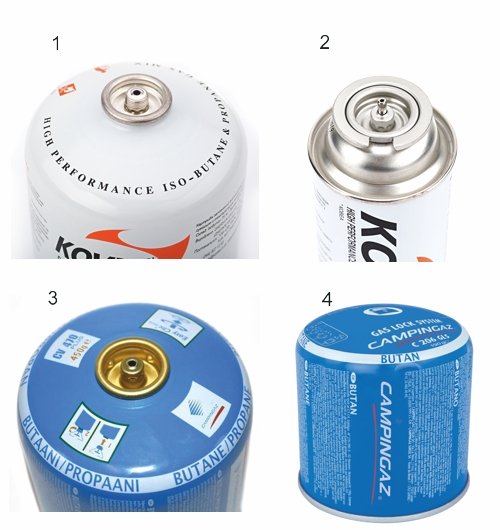
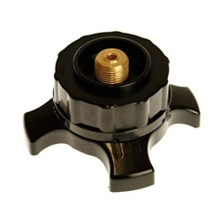

Основная часть горных походов проходит, как правило, выше границы зоны леса, поэтому для приготовления пищи приходится использовать газовые горелки, либо горелки на жидком топливе. В клубе оптимальным решением считаются газовые горелки с экраном, накручивающиеся на газовые баллоны (см. материал на сайте www.turpohod.org).
Как показывает практика, при совершении горных походов в Альпах на высотах по крайней мере до 3.5 км не требуется приобретение газа, предназначенного для использования в особых условиях. В длительных походах целесообразно применять наиболее емкие картриджи с номинальной массой газа 450 гр.
В настоящее время существует 4 основных системы присоединения газовых горелок к газовым баллонам. В России наиболее распространены резьбовые и цанговые соединения (1 и 2 на рис. connectors). Цанговые соединения устанавливаются только на длинных баллонах, предназначенных для использования в портативных плитах, которые в пеших и горных походах не применяются.

Рис. connectors. Различные типы соединений газовых баллонов.
В Италии наиболее распространены баллоны с креплениями типа "easy clic" фирмы Campingaz (3 на рис. connectors). Данные баллоны совместимы только с горелками, выпускаемыми указанной фирмой. Проблему совместимости горелок и баллонов при подготовке к походу в Альпах можно решить двумя способами: заранее заказать в местном магазине баллоны с резьбовыми соединениями, либо приобрести специальные переходники (рис. adapter). Привезти баллоны из России не получится, поскольку их перевозка в самолетах запрещена. Приобретение горелок фирмы Campingaz, на наш взгляд, нецелесообразно, поскольку в России баллоны системы "easy clic" слабо распространены, кроме того данные горелки не вполне подходят для горных и пеших походов.

Рис. adapter. Переходник с баллонов Campingaz с соединением "easy click" на резьбовое соединение.
Не следует путать адаптеры к системе "easy clic" с адаптерами, предназначенными для использования с цанговыми соединениями.
Помимо баллонов с креплениями системы "easy clic" Gampingaz выпускает "протыкные" баллоны и горелки для них (4 на рис. connectors). Из-за опасности утечки и невозможности отсоединения горелки от баллона до его опустошения, такие баллоны не следует использовать вообще ни при каких условиях.
В Вероне газовые баллоны можно приобрести в магазинах сети Decathlon, расположенных в ближних пригородах: поселках Dossobuono di Villafranca и San Giovanni Lupatoto. Наличие баллонов с резьбовым соединением в итальянском Декатлоне -- вопрос везения.
Использовавшиеся в данном походе переходники были приобретены в магазине Sportler Alpin в гор. Trento в 2015 году.
Завснар, как член группы, должен понимать, зачем же группа идет в поход. Ознакомившись с маршрутом, можно сделать вывод, далеко и долго ли идти, куда, когда, и с какими препятствиями на пути придется столкнуться. А также осознавать реальный потенциал лошадиных сил в группе.
Итак, проанализировав ситуацию, вдруг получилось, что группа идет на два месяца в Гималаи, а маршрут у них сплошь линейный, и все нужно тащить на себе. Тогда особо не разгуляешься, тут на счету каждый миллиграмм веса. И не дай Бог у страховочной системы будет висеть лишний сантиметр стропы, а зубная щетка окажется с длинной ручкой. И подстричься желательно налысо, чтобы не нести на себе ничего лишнего. А что касается газа, то необходимо будет применять все способы экономии.
Но что делать, если группа идет на 2 недели в почти что пеший поход? Понятно, что во время переходов надо смотреть себе под ноги, а ночью спать. А придя на стоянку, сразу надо залезть в палатку и развлекаться в тепле и уюте. Так гор и не увидишь. Непонятно тогда, зачем вообще куда-то идти. Прекрасно развлекаться в палатке можно и у себя во дворе. Но естественные перерывы в ходьбе дают нам чудесную возможность насладиться красотой. Выбирать место для привала и ночевки надо не там, где устали, а там где красиво, не забывая при этом о безопасности. Приготовление пищи вне палатки – тоже замечательный способ увидеть и, что важнее, ощутить себя в горах. Газа при этом расходуется больше, а на улице холоднее, чем внутри. Но турист - он же умный человек, и может понять, что если на улице ураган, то сиди и не вылазь. А если светит солнышко, утренний туман проплывает внизу, и вообще благодать, то ради чего экономится газ? Ведь это и есть то, что нам могут дать горы. А прикрываясь ненужным прагматизмом можно ничего и не заметить, зато сделать все с максимальной эффективностью.
Если поставить палатку в красивом месте, то утром первым делом возникает желание вылезти из нее, смотреть вокруг, думать и разговаривать о хорошем и вечном. Тут уже не до экономии газа. А если стоять там, где мягче и теплее всего спать, то хочется мягко и тепло спать, и выходить никуда не надо, сиди себе, экономь на здоровье.
Может возникнуть ложное представление, что не нужно беспокоится о таких вещах, как экономия газа. Это не так. Такими вопросами нужно заниматься, но понимая, что и зачем делается. А для этого надо понять, зачем мы вообще ходим в горы. Ответ на этот вопрос очень прост и в то же время очень сложен. И с каждым разом кажется, что все ближе и ближе подходишь к разгадке, но чем ближе ответ, тем сложнее к нему подобраться.
А экономить газ надо дома, а не в горах. То есть не брать его с двойным запасом, а потом лишать себя всех горных удовольствий, чтобы оставшуюся половину привезти домой. Надо правильно все рассчитывать, учитывая, что какая-то часть газа в горах уйдет на поиск ответа на главный вопрос.
С другой стороны, любой поход является подготовкой к следующему, более сложному походу. Поэтому, в частности, если ваш маршрут позволяет совсем отказаться от экономии газа, все же стоит попробовать применить приемы экономии на практике. Техническая сторона вопроса освещена в статье ``Газ в походе. Всё о газе, что вы хотели знать, но боялись спросить.''